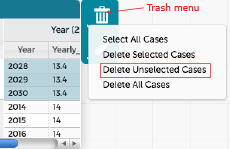

How can I remove bad data?
From CODAP
Hide it in the graph. (See
How do I look at only part of my data?
)
Select the data and delete it from the table.
Note:
deleted data is gone forever–you cannot get it back!

Next:
How do I look for patterns?